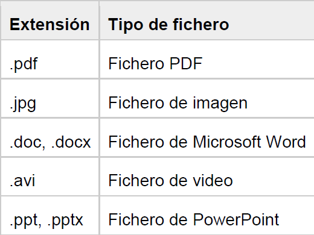

Ficheros binarios

Escribir datos en un fichero binario
La escritura en ficheros binarios representa el flujo de salida de bytes, es decir, necesitamos utilizar las clases que derivan de OutputStream. Se puede escribir datos en un fichero binario de muchas formas. Veamos un ejemplo utilizando la clase FileOutputStream.
public static void main(String[] args) {
try {
DataOutputStream fos = new DataOutputStream(new FileOutputStream("datos.dat"));
fos.writeInt(0);
fos.close();
} catch (FileNotFoundException e) { //todas pueden derivar de IOException
System.out.println(e.getMessage());
} catch (IOException e) {
System.out.println(e.getMessage());
}
}
En el ejemplo, el constructor FileOutputStream abre el fichero datos.dat para escritura. Se crea un nuevo fichero; si un fichero antiguo tiene el mismo nombre, se eliminará. Luego, un DataOutputStream se conecta al FileOutputStream.
DataOutputStream tiene métodos para escribir datos primitivos en un flujo de salida. El método writeInt() escribe los cuatro bytes de un tipo de datos int en la secuencia.
El programa escribe cuatro enteros en el flujo de salida y luego cierra el flujo.
Warning
Siempre hay que cerrar el flujo para asegurarse de liberar todos los recursos asociados a él y que el sistema operativo no consuma recursos.
La excepción IOException se lanza si el stream se ha cerrado y el flujo de salida contenido no admite la escritura después del cierre, o se produce otro error de I/O.
Escritura en un fichero binario usando el búfer
Ahora vamos a escribir más enteros en el fichero. Para ello utilizamos BufferedOutputStream. Este búfer almacena los bytes antes de que se escriban en el disco. Recuerda que un búfer es un bloque de memoria que se usa para ensamblar datos antes de que se escriban todos a la vez.
Cuando se cierra el stream close(), es como si pincháramos en guardar de forma gráfica, es decir, que si no cerramos el stream es como si el fichero estuviera vacío.
El almacenamiento en búfer hace que las operaciones de E/S sean más eficientes. Para un programa que realiza E/S masivas, el almacenamiento en búfer es esencial. La E/S es muy lenta en comparación con las operaciones con almacenamiento principal. Sin almacenamiento en búfer, la E/S sería muy, muy lenta.
public static void writeBuffer() {
try {
DataOutputStream out = new DataOutputStream(
new BufferedOutputStream(
new FileOutputStream("datosBufer.dat")));
for (int i = 0; i < 1000; i++) {
out.writeInt(i);
}
out.close();
} catch (FileNotFoundException e) {
throw new RuntimeException(e);
} catch (IOException e) {
throw new RuntimeException(e);
}
}
Lectura de datos en un fichero binario
Para leer un fichero, primero hemos de preguntarnos un poco sobre él, es decir, si fue escrito por un programa Java, entonces necesitaremos saber qué tipos de datos se usaron, y así poder usar una subclase de InputStream para leer bytes para ese tipo de datos.
InputStream, como hemos visto en los diagramas, es una clase abstracta para objetos que leen flujos de bytes. Aunque, no todas las clases que derivan de ella están relacionadas con la entrada de ficheros de disco. Por ejemplo, PipedInputStream representa datos provenientes de otro programa en ejecución.
public static void main(String[] args) {
try {
DataInputStream dis = new DataInputStream(new FileInputStream("datos.dat"));
System.out.println(dis.readInt());
dis.close();
} catch (FileNotFoundException e) { //todas pueden derivar de IOException
System.out.println(e.getMessage());
} catch (IOException e) {
System.out.println(e.getMessage());
}
}
Al igual que en la escritura para la lectura también disponemos de la clase BufferedInputStream.